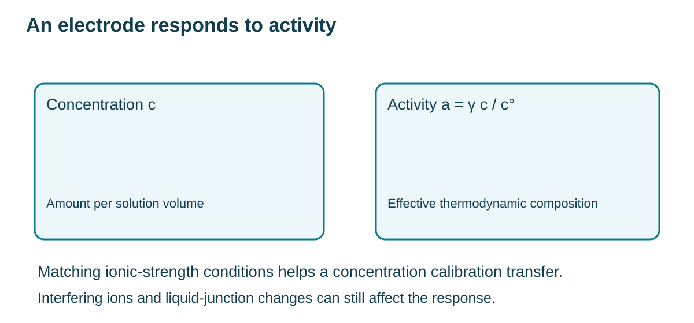
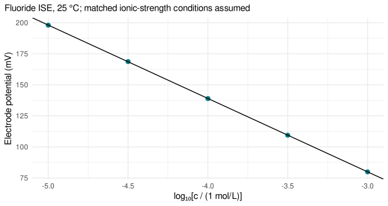
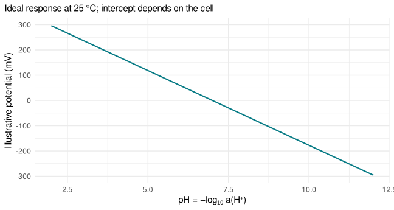
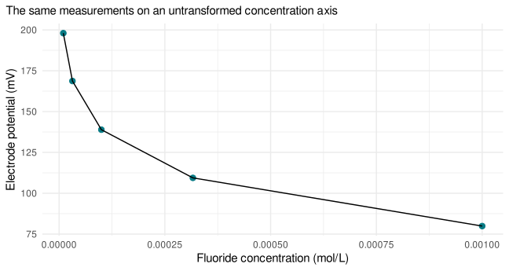
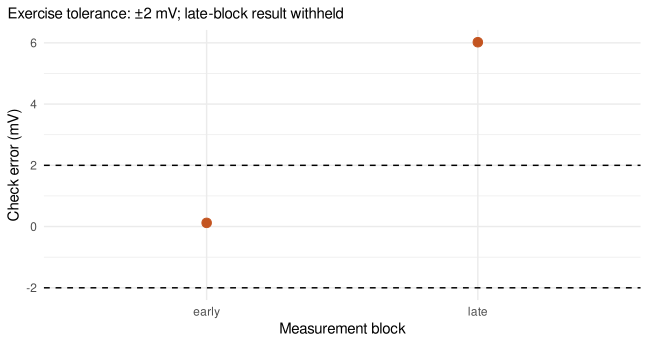

Electrodes and potentiometry
Activity, calibration and the complete cell
About this lecture
- Explain why the complete cell and activity conditions matter.
- Fit and invert a logarithmic fluoride calibration in R.
- Separate a shared drift failure from sample-specific matrix mismatch.
A voltage belongs to a cell

Which two functions are required?
The indicator responds; the reference anchors

The measured potential also includes the reference and junction.
Activity gives the thermodynamic response

a_i=\gamma_i c_i/c^\circ.
Write the logarithmic relationship
E=K+(2.303RT/zF)\log_{10} a_i.
Anion and cation slopes need a convention

For this fluoride example, increasing concentration lowers the potential.
Match conditions before using concentration
Ionic-strength adjustment helps; it does not remove every interference.
pH is already logarithmic

pH=-\log_{10}a_{H^+}.
Buffers establish the pH calibration
Use appropriate buffers and measurement temperature.
Inspect the fluoride standards

Range here: 10⁻⁵ to 10⁻³ mol/L at matched conditions.
The correct axes reveal the model
The same observations are nearly linear against log concentration.
Read the slope per decade
Fitted slope = −59.10 mV per decade.
Invert in two steps
First (E-a)/b; then c=10^{(E-a)/b} mol/L.
Report the accepted early sample
121.2 mV → 2.00 × 10⁻⁴ mol/L.
Check the calibration at a known concentration

The check is 1.00 × 10⁻⁴ mol/L; exercise tolerance ±2.0 mV.
The early block passes
Observed 139.1 mV; error +0.12 mV.
The later block fails
Observed 145.0 mV; error +6.02 mV.
A drift does not identify its cause

Conditioning, junction, temperature and matrix changes are candidates.
Uncertainty changes shape through the inverse
Symmetric voltage limits can become asymmetric concentration limits.
Place other electrochemical signals
Potential: potentiometry. Current: amperometry or voltammetry. Charge: coulometry.
Transfer: a 17.8 mV decrease
Predict the concentration factor before calculating.
Would this measure total fluorine?
Free-ion response does not automatically include every chemical form.
Take the reasoning into R
By hand, embedded experiment and R tasks · Practice quiz.
Save the calculation and a chemical interpretation in your reproducible report.
Interactive experiment · Predict, change, explain.